<app-toolbar></app-toolbar>

<app-sidenav>

  <div class="page-container">
    <div class="button-container">
      <app-return-button [href]="'/agent-home'"></app-return-button>
      <p>Regresar a inicio</p>
    </div>

    <div class="doc-container">
      <h2>Documento Generado</h2>
      <p>Haga click para descargar</p>
      <a (click)="openDocument()" download="documento">
        
      </a>
    </div>
  </div>

</app-sidenav>
